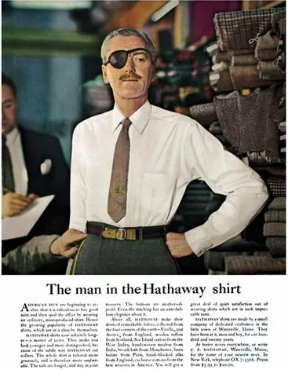

8. Captar atención, pero conseguir que esa atención llegue al PASE
Una publicidad puede llamar muchísimo la atención y aun así construir muy poco para la marca.
La pregunta importante no es únicamente:
“¿La gente miró?”
También:
“¿La gente supo quién estaba hablando?”
Un estudio de Rik Pieters y Michel Wedel publicado en Journal of Marketing analizó 1,363 anuncios impresos mediante eye tracking con más de 3,600 consumidores.
Encontraron funciones diferentes para imagen, texto y marca: la imagen era especialmente eficaz capturando atención, mientras que el elemento de marca ayudaba particularmente a transferir atención hacia otros componentes del anuncio.
Investigaciones más recientes basadas en aproximadamente 9,000 estudios de brand lift también encuentran una relación significativa entre atención publicitaria y resultados como awareness, consideración, preferencia e intención de acción.
Aplicado al PASE
Una publicación divertida, sorprendente o visualmente espectacular puede atraer miradas.
Pero debe existir suficiente presencia de los activos del PASE para que esa atención construya memoria para el PASE.
Esto refuerza la importancia de:
• colores reconocibles;
• recursos visuales constantes;
• logotipo visible;
• lenguaje propio;
• elementos gráficos identificables.
Ejemplo: Hathaway
Aquí vuelve a ser útil el hombre del parche.

El parche consiguió detener la mirada porque introducía una anomalía visual y sugería una historia. Pero aparecía integrado sistemáticamente dentro de la publicidad de Hathaway.
La creatividad llamaba la atención al servicio de la marca, no independientemente de ella.
Criterio operativo
Después de enseñar una publicación durante pocos segundos, preguntar:
“¿De quién era?”
Si recuerdan la idea pero no al PASE, la creatividad está haciendo más trabajo para sí misma que para la marca.
Referencias
- Pieters, R., & Wedel, M. (2004). Attention capture and transfer in advertising: Brand, pictorial, and text-size effects. Journal of Marketing, 68(2), 36–50. https://doi.org/10.1509/jmkg.68.2.36.27794
- Havas Media Network. (2024, 16 de septiembre). Link between attention and drivers of brand outcomes revealed in new research. https://havasmedianetwork.com/news/link-between-attention-and-drivers-of-brand-outcomes-revealed-in-new-research/
- Ogilvy. (2024). Ogilvy 75: 75 years of iconic campaigns. https://www.ogilvy.com/ideas/ogilvy-75-75-years-iconic-campaigns